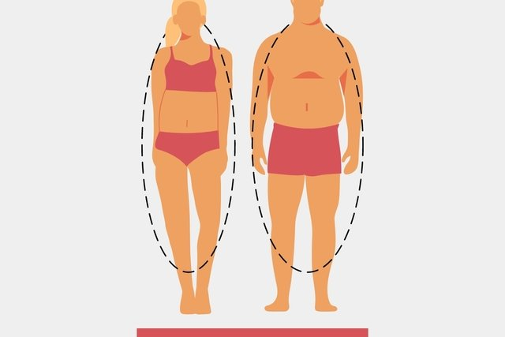
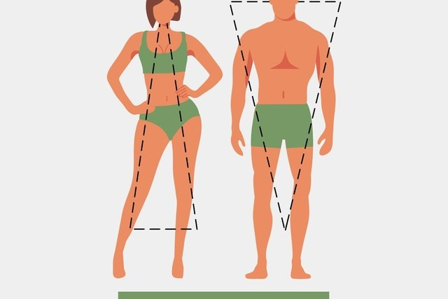
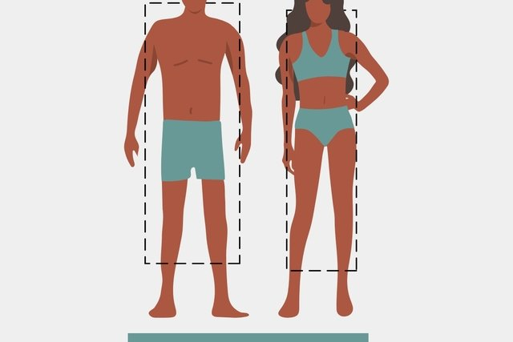

انواع تیپ بدنی در بدنسازی (اکتومورف،مزومورف و اندومورف)

تیپ بدنی چیست؟
تیپ بدنی یا سوماتوتایپ، به سه نوع کلی ترکیبات بدنی افراد مختلف اشاره دارد. این ایده اولین بار توسط دکتر دابلیو. اچ. شلدون و در دهه ی 1940 بیان شد، او سه تیپ اصلی را اندومورف، مزومورف و اکتومورف نامید. در ابتدا باور بر این بود که سوماتوتایپ فرد غیر قابل تغییر است و ویژگی های روانی و فیزیولوژیکی فرد بر اساس تیپ بدنی او رشد پیدا میکنند.
بر اساس نظریه شلدون، اندومورف ها بدنی همیشه گرد و نرم دارند، مزومورف ها همیشه مربعی و عضلانی هستند و اکتومورف ها هم همیشه باریک هستند و استخوان بندی ریز دارند.
او بیان کرد که این تیپ های بدنی روی شخصیت افراد تاثیر دارد و و نام ها به این دلیل انتخاب شدند که او معتقد بود ویژگیهای غالب هر سوماتوتایپ در هسته ی وجودی او شکل گرفته و این ویژگی ها از رشد ترجیحی لایه های جنینی آندودرمال، مزودرمی یا اکتودرمی پیش از تولد ناشی میشوند.
چگونه تیپ بدنی خود را بشناسیم؟
بر اساس تمامی این نکات، شناسایی تیپ بدنی فعلی برای متخصصان تناسب اندام کاملا ضروری است. یک بررسی ساده از تیپ بدنی میتواند موقعیت های فیزیولوژیکی مختلفی که فرد ممکن است با آنها دست و پنجه نرم کند را به شما بشناساند و به شما امکان دهد که راه حل هایی متناسب با هر موقعیت را انتخاب کنید. از ویژگی های سوماتوتایپ زیر کمک بگیرید تا تیپ بدنی هر فرد را بهتر بشناسید:
اندومورف ها
تایپ بدنی اندومورف
ساختار استخوانی محکم، بخش میانی پهن و باسن بزرگ
به نسبت دیگر تیپ های بدنی، چربی بیشتری در سراسر بدن دارند.
به سرعت وزن میگیرند و به کندی آن را از دست میدهند.
متابولیسم آنها به طور طبیعی کند است، که این ممکن است به دلیل بیماری های مزمن (به عنوان مثال، کمبود تیروئید، دیابت) و یا نتیجه یک سبک زندگی بی تحرک و تعادل انرژی روزانه مثبت باشد.
چگونگی تمرین دادن اندومورف ها
اندومورف ها باید روی تمرینات مرتبط با کاهش چربی (چربی سوزی) تمرکز کنند تا به ترکیب بدنی مطلوب خود و البته بهبود عملکرد سیستم قلبی-تنفسی دست پیدا کنند. تمرینات مقاومتی باید روی تقویت عضلات و تثبیت مفاصل تمرکز داشته باشد تا فرد زندگی بهتری را تجربه کند؛ اما به طور کلی اندومورف ها باید بیشتر از باقی موارد روی بهبود سیستم قلبی-تنفسی و کاهش چربی متمرکز بمانند.
در باشگاه، روی فاز 1 و فاز 2 OPT کار کنید، اما بیشتر تمرینات را روی سوخت و ساز بدن فرد پایه گذاری کنید. از دوره های استراحت کوتاه و تمرینات مقاومتی و البته مقادیر زیادی پلایومتریک (در محدوده تحمل فرد) استفاده کنید و تا حد امکان زمان باقی مانده را به کاردیو حالت ثابت اختصاص دهید.
تمرینات بی هوازی و هوازی مستمر به اندومورف ها کمک میکنند تا سوخت و ساز بدن خود را بالا ببرند و انرژی مورد نیاز روزانه ی بدن خود را افزایش دهند. به علاوه، به افرادی که اندومورفیک هستند توصیه کنید فاکتور ترموژنز فعالیت غیر ورزشی (NEAT) خود را تا آنجا که ممکن است بالا ببرند و در زمان هایی که در باشگاه نیستند تحرک بیشتری داشته باشند. به طور کلی، برای این تیپ بدنی، کاهش بی تحرکی برابر است با غلبه کردن بر تمامی چالش های متابولیک.
از آنجا که این گروه متابولیسم پایینی دارند (مهم نیست که دلیل آن چیست) و مازاد انرژی در بدن آنها ذخیره میشود (چربی)، رژیم غذایی آنها باید روی از دست دادن چربی و در عین حال عضله سازی متمرکز باشد. برای رسیدن به این اهداف باید یک رژیم غذایی کم کالری و سرشار از پروتئین پیشنهاد بدهید. این رژیم باید حاوی 2.2 گرم پروتئین به ازای هر کیلو وزن فرد باشد (و گاهی حتی بیش از 2.2 گرم)، این رژیم غذایی در طی فرایند مصرف کالری کمتر و کاهش وزن، از بافت عضلانی حال حاضر بدن ورزشکار محافظت میکند.
تغذیه و برنامه تمرینی اندومورف
پس از اطمینان از برآورده شدن نیاز روزانه ی فرد به پروتئین، مقدار کالری باقیمانده میتواند از هر رژیم غذایی حاوی کربوهیدرات و چربی که فرد به آن تمایل دارد، به دست آید. برخی ممکن است رژیم “کتوژنیک” بسیار کم کربوهیدرات را ترجیح دهند، این رژیم به آنها کمک میکند که در طول روز چربی بیشتری بسوزانند، در حالی که برخی دیگر ممکن است بدون دریافت کربوهیدرات کافی در رژیم غذایی خود، به هیپوگلیسمی (افتادن قند خون) و تهوع مبتلا شوند.
این امر به ویژه در طول تمرینات، و زمانی که کربوهیدرات ها برای سوخت لازم مورد نیاز سیستم قلبی-تنفسی را تامین کنند، مهم است. اما صرف نظر از اینکه برای فرد کربوهیدرات منبع انرژی است یا چربی، مهمترین نکته این است که کل کالری مورد نیاز روزانه فرد را تعیین کنید و میزان غذای روزانه را کمی کمتر کنید (با پروتئین کافی) به طوری که بدن در تعادل انرژی منفی با کمترین کاتابولیسم عضلانی باقی بماند.
با استفاده از تکنیک های بالا بردن سوخت و ساز، کالری سوزی و بهبود کارایی متابولیک را به حداکثر برسانید. از یک رژیم غذایی با پروتئین بالا و کربوهیدرات و چربی متعادل که تعادل انرژی منفی را حفظ میکند، استفاده کنید.
اگر تیپ بدنی اکتومورف هستید و میخواهید عضله سازی کنید، روی تغذیه ی خود متمرکز شوید. در این بخش چند دستورالعمل عالی برای عضله سازی وجود دارند که به شما در رسیدن به اهدافتان کمک میکنند.
مزومورف ها
تایپ بدنی مزومورف
ساختار استخوانی متوسط، با شانه هایی پهن تر از عرض ران ها.
بدنی ورزیده و ورزشکاری دارند.
متابولیسم خوب، به آسانی وزن میگیرند و وزن کم میکنند.
چگونگی تمرین دادن مزومورف ها
باید بیان کنیم که تمرین کردن و عضله سازی برای مزومورف ها ساده تر از باقی گروه هاست. سوخت و ساز بدن آنها متناسب است و بدن آنها معمولا عضلانی است و بنابراین به راحتی میتوانند با کمترین تلاش به اهداف بدنسازی خود برسند. اما به خاطر داشته باشید، البته افرادی هستند که کاملا متناسب به نظر میرسند و نیازی نیست خیلی هم تلاش کنند، اما استثنائاتی هم وجود دارد.
اکثر افرادی که ترکیب بدنی مزومورف متناسبی دارند، آن را در نتیجه ی عوامل متعدد در طول زندگی خود ایجاد کرده اند. برای تیپ های اندومورف یا اکتومورف هم که سبک زندگی، رژیم غذایی و تناسب اندام خود را بهبود بخشیده اند، تلاش و نظم و انضباط مهمترین عوامل هستند.
تیپ بدنی مزومورف نشان دهنده ی این است که فرد میتواند به سراغ تمرینات قدرتی سنگین تری مانند (تمرینات SAQ)، و تمرینات ورزشی حرفه ای برود. رژیم لاغری و غذایی مناسب این گروه باید بر پایه ی حفظ سلامتی بدن و اهداف بدنسازی تعریف شود.
تغذیه و برنامه تمرینی مزومورف
این گروه به ازای هر کیلو از وزن بدنشان و بسته به سنگین بودن تمرینات، به 1.2 تا 2.2 گرم پروتئین نیاز دارند و باقی کالری مورد نیاز هم باید از ترکیبی از کربوهیدرات و چربی به دست بیاید. اگر فرد تمایل دارد که فرم بدن خود را تغییر دهد، بر اساس اینکه میخواهد وزن بگیرد یا از دست بدهد، باید میزان کالری دریافتی را زیاد و یا کم کند.
از فازهای OPT که با اهداف فرد همخوانی دارند، استفاده کنید. رژیم غذایی را بر اساس اهداف ورزشی و فعالیت های بدنی تعریف کنید، میزان کالری دریافتی را برای تعادل انرژی مثبت، خنثی یا منفی، افزایش و یا کاهش دهید. اگر فرد قصد عضله سازی دارد، میزان دریافت پروتئین روزانه را 2.2 گرم به ازای هر کیلو از وزن او تعریف کنید. اگر فرد میخواهد بدن خود را حفظ کند، بر طبق بیانیه ی سازمان غذا و دارو، باید روزانه و به ازای هر کیلو از وزن خود، 0.8 گرم پروتئین دریافت کند.
اکتومورف ها
تایپ بدنی اکتومورف
شانه های باریک و ران هایی متناسب با قد فرد.
این افراد استخوانی هستند و خیلی عضله ای نیستند.
متابولیسم سریع دارند و به همین دلیل به سختی وزن اضافه میکنند.
زمانی که BMI9 ≤17 باشد، نشان دهنده اختلال در غذا خوردن است (مانند بی اشتهایی، پرخوری عصبی).
چگونگی تمرین دادن اکتومورف ها
اکتومورف ها با چالشهایی دقیقا برعکس چالشهای گروه اندومورف روبرو هستند. همانطور که پیشتر هم اشاره کردیم، اغلب اکتومورف ها سوخت و ساز بالایی دارند و استخوانی هستند، به همین دلیل وزن گرفتن و حفظ آن برایشان مشکل است. به همین دلیل، تکنیکهای تمرینی برای هیپرتروفی و حداکثر قدرت باید با تمرکز کمتر بر تمرینات قلبی-تنفسی برای کاهش مصرف کلی انرژی اولویت بندی شوند.
بعد از فعالیت در سطح اولیه ی مدل OPT، فازهای 3 و 4 بیشترین فایده را برای این تیپ بدنی خواهند داشت. هیپرتروفی و تمرینات مقاومتی-قدرتی معمولا بی هوازی هستند و هنگامی که با دوره های استراحت طولانی تر ترکیب شوند، مانند دیگر ورزش های سنگین تر و سریع تر، باعث افزایش کالری سوزی در لحظه نمیشوند. اگر این نوع بدنسازی با تعادل انرژی مثبت همراه شود، به اکتومورف ها کمک میکند تا عضله سازی کنند.
این گروه برای رسیدن به حجم بدنی که میخواهند، باید رژیم غذایی متناسبی هم داشته باشند. این گروه زودتر از باقی گروه ها انرژی میسوزانند، بنابراین باید کالری بیشتری دریافت کنند. رژیم های غذایی متمرکز بر کاهش کربوهیدرات و چربی برای این تیپ بدنی مناسب نیستند و در برخی موارد، ممکن است به آنها توصیه کنیم که شیک های تغذیهای «حجم دهنده» را به رژیم غذایی خود اضافه کنند.
تغذیه و برنامه تمرینی اکتومورف
همانند اندومورف هایی که در تلاش هستند تا بدن خود را به بدن مزومورف ها شبیه کنند، اکتومورف ها هم باید پروتئین زیادی مصرف کنند. این گروه برای رشد عضله های خود روزانه و به ازای هر کیلو از وزن بدنشان، به 1.2 تا 1.6 گرم پروتئین نیاز دارند. البته که این عدد برای برخی افراد تا 2.2 گرم هم متغیر است.
سپس آن پروتئین باید در فواصل سه ساعته مصرف شود تا سیگنال های سنتز پروتئین ماهیچه ای (MPS) (از آمینو اسید لوسین) در تمام طول روز به حداکثر برسند. یک شیک پروتئین اضافی شبانه، درست قبل از خواب برای کوتاه کردن زمان گرسنه ماندن در طول شب، میتواند برای به حداکثر رساندن MPS در افرادی که مشکل افزایش وزن دارند، کارساز باشد.
با استفاده از هیپرتروفی با شدت پایین و تمرینات مقاومتی-قدرتی با دوره های استراحت طولانی تر، سریع تر و بیشتر عضله سازی کنید.یک رژیم غذایی سرشار از پروتئین با میزان کافی کربوهیدرات و چربی که تعادل انرژی مثبت را حفظ میکند، داشته باشید.